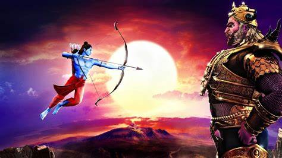
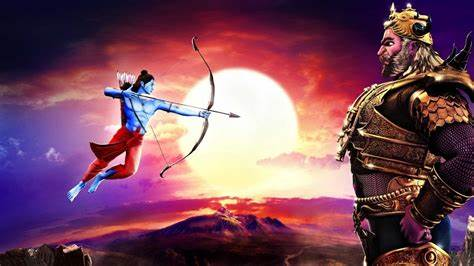

1.png)
संक्षिप्त इतिहास
श्री हनुमानगढ़ी मन्दिर , श्री अयोध्या धाम में स्थित है | श्री हनुमान जी का यह स्थान लगभग 10वीं शताब्दी से है जहाँ श्री हनुमानजी अयोध्या के राजा के रूप में विराजमान हैं | श्री हनुमान जी की ऐसी अनुपम मूर्ति विश्व के किसी मन्दिर में नहीं है जैसी श्री हनुमानगढ़ी में है | विश्व के कोने कोने से श्रद्धालु गण यहाँ आ कर श्री हनुमान जी के दर्शन करते हैं | मंगलवार तथा शनिवार को विशेष ही जनसमूह दर्शन हेतु आता है | मन्दिर जाने के लिए कुल 76 सीढ़ियां चढ़नी होती है |
मान्यता है कि जब रावण पर विजय प्राप्त करने के बाद भगवान राम अयोध्या लौटे, तो हनुमानजी यहां रहने लगे। इसीलिए इसका नाम हनुमानगढ़ या हनुमान कोट रखा गया। यहीं से हनुमानजी रामकोट की रक्षा करते थे। मुख्य मंदिर में, पवनसुत माता अंजनी की गोद में बैठते हैं।
हनुमान का जीवन
हनुमान जी अपने साहस, शक्ति और निष्ठावान, निस्वार्थ सेवा के लिए प्रसिद्ध बंदर देवता हैं। हनुमान जी के जीवन के कुछ सबसे महत्वपूर्ण हिस्सों के बारे में नीचे संक्षिप्त और सचित्र विवरण दिया गया है।
1. कुछ लोगों का मानना है कि हनुमान का जन्म बंदरों के राजा और रानी के पुत्र के रूप में हुआ था। दूसरों के अनुसार, वे अंजना नामक एक महिला अप्सरा के पुत्र हैं, जो एक श्राप के कारण बंदर बन गई थी, और वायु, पवन देवता के पुत्र हैं। यह भी कहा जाता है कि अपने पिता वायु से हनुमान को उड़ने की क्षमता प्राप्त हुई थी।
2. हनुमान का जन्म होते ही उन्हें भूख लगी और उनकी माँ उन्हें संतुष्ट नहीं कर सकीं। तभी उनकी नज़र सूर्य पर पड़ी और उन्होंने सोचा कि यह कोई फल है, वे उसके पीछे दौड़ पड़े। सूर्य तो उड़ गया लेकिन हनुमान ने उनका पीछा करते हुए इंद्र के स्वर्ग तक पहुँच गए। लेकिन यहाँ इंद्र ने हस्तक्षेप किया और अपने वज्र से हनुमान के जबड़े को घायल कर दिया।
3. लेकिन उसके पिता ने उससे बदला लेने की जल्दी की और सभी देवताओं के शरीर में प्रवेश करके उन्हें शूल दे दिया। इंद्र ने वायु से माफ़ी मांगी और सहमति जताई कि हनुमान अमर हो जाएं। सभी देवता एक गुफा में युवा हनुमान को आशीर्वाद देने के लिए एकत्र हुए।
4. एक युवा वानर देवता के रूप में, हनुमान काफी शरारती थे और अपनी शक्तियों का दुरुपयोग करके पास के जंगल में रहने वाले संतों को परेशान करते थे। इस पेंटिंग में हनुमान को अपनी सांसों से बवंडर बनाते, चढ़ाया हुआ पानी पीते, अपनी पूंछ से एक सहायक छड़ी खींचते, दाढ़ी खींचते और पवित्र अग्नि बुझाते हुए देखा जा सकता है।
5. अंत में सभी देवताओं ने ब्रह्मा से समाधान खोजने के लिए प्रार्थना की। इस प्रकार युवा हनुमान द्वारा किए गए उत्पात से दुनिया की रक्षा के लिए एक श्राप बनाया गया, जिससे उनकी शक्तियों का ज्ञान समाप्त हो गया।
6. हनुमान की शक्ति - जिसका बड़ा होना केवल एक उदाहरण है - केवल तभी उपलब्ध हुई जब भालुओं के राजा जामवंत ने हनुमान को याद किया कि उनके पास वह शक्ति है। हनुमान की शक्तियाँ
7. और वह शक्ति वास्तव में महान थी। उदाहरण के लिए हनुमान आसानी से हाथी से लड़ सकते थे, क्योंकि वे अपनी इच्छा से हाथी से भी बहुत बड़े हो सकते थे।
8. रामायण के समय, हनुमान को अग्रिम जासूस के रूप में लंका भेजा गया था। द्वीप तक पहुँचने के लिए उन्हें समुद्र के ऊपर से उड़ना था, लेकिन सुरसा ने उन्हें रोक दिया, जो उनकी परीक्षा लेना चाहती थी। उसे वरदान था कि उसके सामने आने वाले सभी लोगों को उसके मुँह से होकर गुजरना होगा। हालाँकि, जब वह हनुमान को निगलना चाहती थी, तो वे और भी बड़े होते गए, इसलिए उसे भी और भी बड़ा होना पड़ा। तब हनुमान अचानक बहुत छोटे हो गए और उसके मुँह से बाहर निकलकर उसके कान के माध्यम से अंदर चले गए, इस प्रकार वरदान पूरा हुआ।
9. लंका के अशोकवनम या अशोक वृक्षों के जंगल में हनुमान रावण पर जासूसी करते हैं, जो सीता को अपनी पत्नी बनाने के लिए व्यर्थ प्रयास कर रहा है। बाद में उन्होंने रावण के महल के बगीचों में सीता से संपर्क किया, उन्हें उनके उद्धार के लिए बनाई जा रही योजनाओं के बारे में बताया और उन्हें राम की अंगूठी एक प्रतीक के रूप में दी।
10. अपनी सफलता से प्रसन्न होकर हनुमान ने लंका के महल के बगीचों में रावण के पुत्र राक्षस मेघनाथ से युद्ध किया। उन्होंने मेघनाथ पर विजय प्राप्त की, लेकिन अंततः रावण के राक्षसों द्वारा उन्हें पकड़ लिया गया।
11. राक्षस राजा के सामने लाए जाने पर रावण ने आदेश दिया कि राम के दूत के रूप में उन्हें मारा नहीं जा सकता, लेकिन उनकी पूंछ को कपड़े और तेल से जलाया जा सकता है। लेकिन हनुमान ने अपनी शक्तियों का उपयोग करके अपनी पूंछ को अनिश्चित काल तक बड़ा कर दिया, जब तक कि राक्षसों के पास इसे ढकने के लिए कोई कपड़ा नहीं बचा। जब वे अभी भी उनकी पूंछ में आग लगाने की कोशिश कर रहे थे, हनुमान अचानक बहुत छोटे हो गए और अपनी रस्सियों से बच निकले।
12. अपनी जलती हुई पूंछ को पीछे खींचते हुए हनुमान ने पूरी लंका में आग लगा दी और वापस मुख्य भूमि पर आ गए। वे राम के पास वापस आ गए और उन्हें रावण की सेना के बारे में बहुमूल्य जानकारी दी। सेना ने लंका तक एक पुल पार किया जिसे नल नामक एक अन्य वानर नेता और मास्टर आर्किटेक्ट ने बनाया था।
13. इसके बाद हुए शक्तिशाली युद्ध के दौरान, हनुमान ने लंका शहर की मुख्य रक्षक राक्षसी लंकिनी को हराया।
14. लंका के युद्ध के दौरान हनुमान की सबसे बड़ी उपलब्धि हालांकि लक्ष्मण को एक घातक घाव से ठीक करने वाली जड़ी-बूटी को वापस लाना था। वह इसे खोजने के लिए हिमालय तक उड़े, कई राक्षसों, जैसे कालनेमि द्वारा परेशान किए गए। क्योंकि इंद्र उन्हें भ्रमित कर रहे थे, हनुमान जड़ी-बूटी नहीं ढूंढ पाए और अंत में पूरे पर्वत को लंका ले आए।
15. रावण राम से हार गया और राम और सीता को अयोध्या का राजा और रानी बनाया गया। जाहिर है हनुमान मौजूद थे, राम के पसंदीदा सेनापति बने रहे और उनकी सेवा में अपना जीवन जारी रखा। जब राम ने उसे कोई वरदान देने की पेशकश की, तो उसने कहा कि वह तब तक जीवित रहेगा जब तक लोग राम के कार्यों के बारे में बात करते रहेंगे।
 
